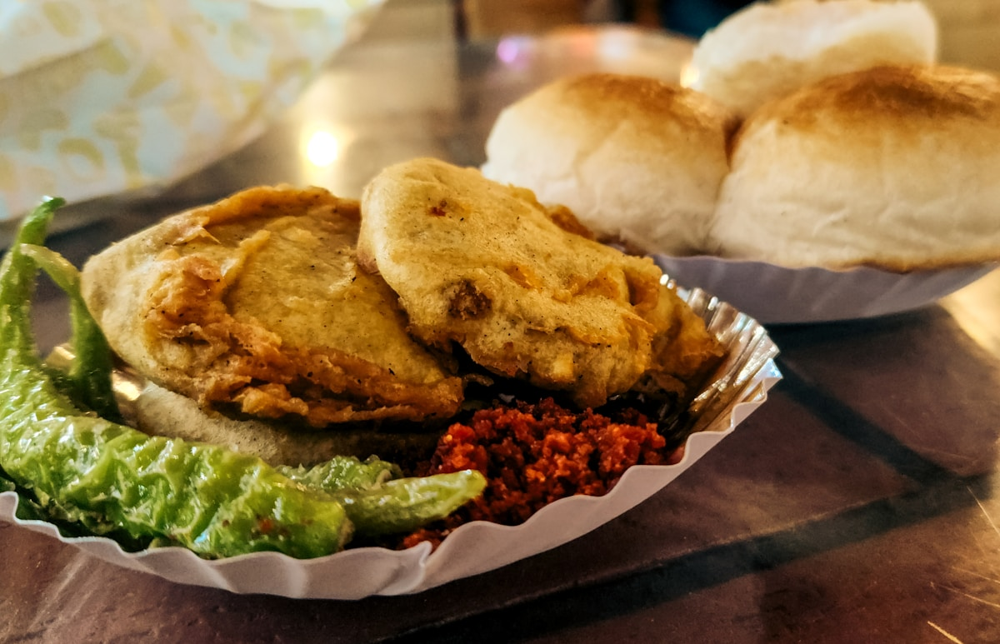
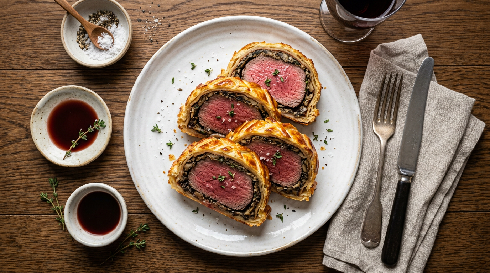

Taste, flavor, perception
The culinary journey above and the artwork below are one practice. Nicket’s life is grounded in food, ritual, and a holistic way of being—taste and flavor, street and ceremony, tradition and experiment, all felt through the senses and through spirit. That same attention—how we perceive place, memory, and the body—flows into the art and design you see here. Mumbai and London were once home; Silicon Valley is home now. This site is the bridge between that inner life and the work it makes visible.

Mumbai · once home
Mumbai
Learning to eat with your hands—thali, shared plates, the feel of roti and rice. Touch is as much a part of taste as flavor; eating is ritual and connection. That way of perceiving food and place carries into the art.

London · once home
London
Eating with a fork and knife. At my London school, we learned to put even a pea on a plate and eat with a knife and fork—and to eat a burger with a knife. Ritual, restraint, and the perception of order shaped how food and place are felt.

Silicon Valley · current home
San Francisco
This is where I learned about molecular gastronomy, farm-to-table cooking, pâtissiers, sommeliers, and other culinary styles. Some of my favorite tasting-menu restaurants are here. My wife and I enjoy eating at these places—taste and art remain ultimate forms of expression.